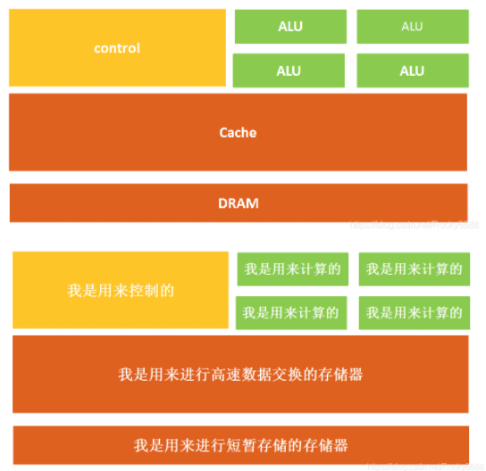

CUDA基础 [1]：CPU GPU TPU NPU
CPU（Central Processing Unit）中央处理器
CPU的结构主要包括运算器（ALU, Arithmetic and Logic Unit）、控制单元（CU, Control Unit）、寄存器（Register）、高速缓存器（Cache）和它们之间通讯的数据、控制及状态的总线。

GPU（Graphics Processing Unit）图形处理器
也是由三个部分组成：计算单元、控制单元和存储单元。

CPU精于控制和复杂运算，而GPU精于简单且重复的运算：比如矩阵运算。
- CPU：擅长流程控制和逻辑处理，不规则数据结构，不可预测存储结构，单线程程序，分支密集型算法
- GPU：擅长数据并行计算，规则数据结构，可预测存储模式
CPU是顺序执行运算，而GPU是可以大量并发的执行运算。
虽然GPU是为了图像处理而生的，但在结构上并没有专门为图像服务的部件，只是对CPU的结构进行了优化与调整，所以GPU不仅可以用在图像领域，它还被用来科学计算、密码破解、数值分析，海量数据处理（排序，Map-Reduce等），金融分析等需要大规模并行计算的领域。
但GPU无法单独工作，必须由CPU进行控制调用才能工作。CPU可单独作用，处理复杂的逻辑运算和不同的数据类型，但当需要大量的处理类型统一的数据时，则可调用GPU进行并行计算。
TPU（Tensor Processing Unit）张量处理单元
深度学习算法的专用芯片
TPU的高性能还来源于对于低运算精度的容忍。研究结果表明，低精度运算带来的深度学习算法准确率损失很小，但是在硬件实现上却可以带来巨大的便利，包括功耗更低、速度更快、占芯片面积更小的运算单元、更小的内存带宽需求等。TPU采用了8比特的低精度运算。
NPU（Neural Network Processing Unit）神经网络处理器
NPU的工作原理是在电路层模拟人类神经元和突触，并且用深度学习指令集直接处理大规模的神经元和突触，一条指令完成一组神经元的处理。相比CPU和GPU，NPU通过突触权重实现存储和计算一体化，从而提高运行效率。
本博客所有文章除特别声明外，均采用 CC BY-NC-SA 4.0 许可协议。转载请注明来自 旭穹の陋室！
 wechat
wechat alipay
alipay
相关推荐


评论
![CUDA基础 [1]：CPU GPU TPU NPU](/images/%E6%88%98%E5%8F%8CCG_%E7%BA%AF%E7%99%BD%E7%9A%84%E7%A4%BC%E6%9C%8D.png)